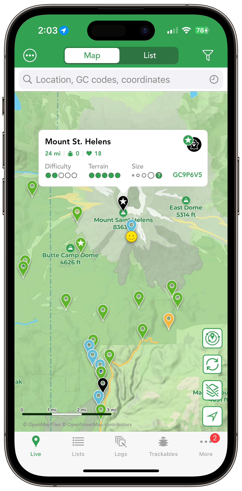

The Ultimate Geocaching Experience
Discover millions of geocaches worldwide with beautiful offline maps, CarPlay integration, and powerful search tools. Cachly is the premium geocaching companion for iOS.


4.8
App Store Rating
3,550+
User Ratings
8.1.2
Current Version

Scroll to explore